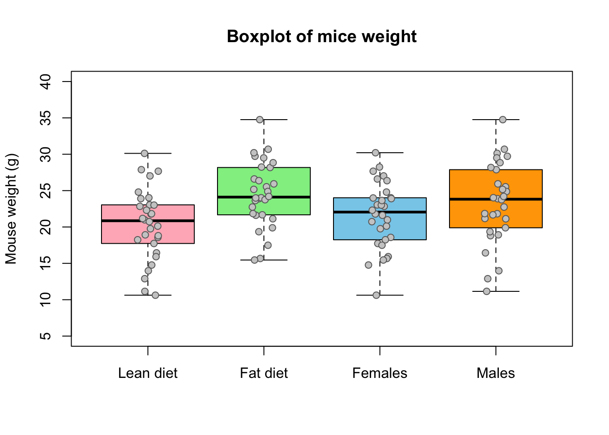
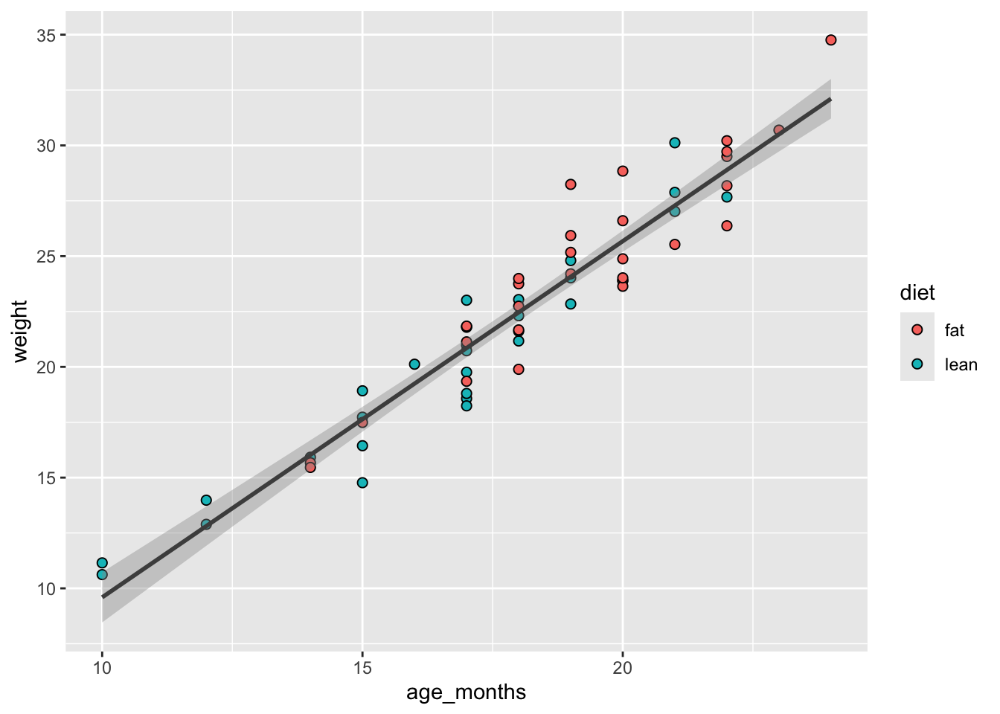

# Load required packages
library(tidyverse) # to ease data wrangling and visualization
library(here) # to help with file paths
library(RColorBrewer) # color palettes
library(patchwork) # combine plots in panels for figures
# Load the file and save it to object mice_data
mice_data <- read.table(file=here("data/diet_mice_metadata.txt"),
header = TRUE,
sep = "\t", dec = ".",
stringsAsFactors = TRUE)Day1
Basic data analysis | Lesson 1
Learning Objectives
- How to import datasets into R.
- Conduct descriptive statistics on the dataset to explore the data.
- Basic data visualization with histograms, boxplots, and scatterplots.
- How to calculate the correlation between 2 (numerical) variables.
- How to make a simple linear regression, and plot the line in the scatterplot.
- Conduct a t-test for basic hypothesis testing.
- Recognize the differences between base R plotting and using the ggplots2 package.
The dataset
The scientific experiment | Imagine that you are interested in determining the effects of a high-fat diet on gene expression. For this study, the scientists obtained data from 60 mice, where half were fed a lean-diet, and the other half a high-fat diet. All other living conditions were the same. Four weeks after, a biopsy of the mice’s liver was sequenced by RNA-seq, and all mice were weighted, and the sex and age were also recorded. The results from this analysis are saved in diet_mice_metadata.txt file, and the gene counts are in the file diet_mice_counts.xlsx.
About the experimental design
- What is the research question? What is the hypothesis?
- How many variables are in the study?
- Which variable(s) are dependent? (Dependent or Response variables are the variables that we are interested in predicting or explaining.)
- Which variable(s) are independent? (Independent or Explanatory variables are used to explain or predict the dependent variable.)
- Which variable(s) are covariates? (Covariates are variables that are potentially related to the outcome of interest in a study, but are not the main variable under study - used to control for potential confounding factors in a study.)
- Are the “controls” appropriate? Why?
Hands-on exercises
We will start by looking at the metadata file containing the variables related to each sample (i.e. each mouse): type of diet, final weight, gender, and age in months.
Create a new project in RStudio
Start by creating a new project in RStudio. Go to File > New project, and follow the instructions.
Once you have are in the project folder, create a new R script file. Go to File > New File > R Script. A blank text file will appear above the console. Save it in your project folder with the name diet_analysis.R.
Load data and inspect it
- Download the file
diet_mice_metadata.txt(mice weights according to diet) from GitHub https://github.com/patterninstitute/rmind-workshop/blob/main/data/diet_mice_metadata.txt.
- Save the file in your current working directory where the RProject was created inside a folder named
data.
- Type the instructions inside grey boxes in pane number 2 of RStudio — the R Console. As you already know, the words after a
#sign are comments not interpreted by R, so you do not need to copy them.- In the R console, you must hit
enterafter each command to obtain the result.
- In the script file (R file), you must
runthe command by pressing the run button (on the top panel), or by selecting the code you want to run and pressingctrl + enter.
- In the R console, you must hit
- Save all your relevant/final commands (R instructions) to your script file to be available for later use.
# Briefly explore the dataset
View (mice_data) # Open a tab in RStudio showing the whole tablehead (mice_data, 10) # Show the first 10 rows sample_id diet weight gender age_months
1 mus01 lean 24.02 F 19
2 mus02 lean 21.79 F 17
3 mus03 lean 23.90 F 20
4 mus04 lean 11.15 M 10
5 mus05 lean 17.73 F 15
6 mus06 lean 12.89 M 12
7 mus07 lean 20.12 F 16
8 mus08 lean 23.04 F 18
9 mus09 lean 22.84 F 19
10 mus10 lean 18.92 M 15tail (mice_data, 10) # Show the last 10 rows sample_id diet weight gender age_months
51 mus51 fat 23.75 M 18
52 mus52 fat 21.84 M 17
53 mus53 fat 26.60 F 20
54 mus54 fat 21.13 M 17
55 mus55 fat 24.20 M 19
56 mus56 fat 30.69 M 23
57 mus57 fat 23.99 F 18
58 mus58 fat 19.35 M 17
59 mus59 fat 26.37 F 22
60 mus60 fat 28.84 M 20str(mice_data) # Describe the class of each column in the dataset'data.frame': 60 obs. of 5 variables:
$ sample_id : Factor w/ 60 levels "mus01","mus02",..: 1 2 3 4 5 6 7 8 9 10 ...
$ diet : Factor w/ 2 levels "fat","lean": 2 2 2 2 2 2 2 2 2 2 ...
$ weight : num 24 21.8 23.9 11.2 17.7 ...
$ gender : Factor w/ 2 levels "F","M": 1 1 1 2 1 2 1 1 1 2 ...
$ age_months: int 19 17 20 10 15 12 16 18 19 15 ...summary (mice_data) # Get the summary statistics for all columns sample_id diet weight gender age_months
mus01 : 1 fat :30 Min. :10.62 F:30 Min. :10.00
mus02 : 1 lean:30 1st Qu.:19.24 M:30 1st Qu.:17.00
mus03 : 1 Median :22.79 Median :18.00
mus04 : 1 Mean :22.43 Mean :17.98
mus05 : 1 3rd Qu.:25.63 3rd Qu.:20.00
mus06 : 1 Max. :34.76 Max. :24.00
(Other):54 To facilitate further analysis, we will create 2 separate data frames: one for each type of diet.
# Filter the diet column by lean or fat and save results in a data frame
lean <- subset (mice_data, diet == "lean")
fat <- subset (mice_data, diet == "fat")
# Look at the new tables
head (lean) sample_id diet weight gender age_months
1 mus01 lean 24.02 F 19
2 mus02 lean 21.79 F 17
3 mus03 lean 23.90 F 20
4 mus04 lean 11.15 M 10
5 mus05 lean 17.73 F 15
6 mus06 lean 12.89 M 12head (fat) sample_id diet weight gender age_months
31 mus31 fat 15.67 F 14
32 mus32 fat 28.18 M 22
33 mus33 fat 29.50 M 22
34 mus34 fat 23.89 M 20
35 mus35 fat 21.61 F 18
36 mus36 fat 25.53 M 21Descriptive statistics and Plots using R
Now, we should look at the distributions of the variables. First we will use descriptive statistics that summarize the sample data. We will use measures of central tendency — Mean, Median, and Mode —, and measures of dispersion (or variability) — Standard Deviation, Variance, Maximum, and Minimum.
# Summary statistics per type of diet - min, max, median, average, standard deviation and variance
summary(lean) # quartiles, median, mean, max and min sample_id diet weight gender age_months
mus01 : 1 fat : 0 Min. :10.62 F:20 Min. :10.00
mus02 : 1 lean:30 1st Qu.:17.86 M:10 1st Qu.:15.00
mus03 : 1 Median :20.86 Median :17.00
mus04 : 1 Mean :20.37 Mean :16.77
mus05 : 1 3rd Qu.:23.03 3rd Qu.:18.75
mus06 : 1 Max. :30.12 Max. :22.00
(Other):24 sd (lean$weight) # standard deviation of the weight[1] 4.86655var(lean$weight) # variance of the weight (var=sd^2)[1] 23.68331summary(fat) sample_id diet weight gender age_months
mus31 : 1 fat :30 Min. :15.46 F:10 Min. :14.00
mus32 : 1 lean: 0 1st Qu.:21.71 M:20 1st Qu.:18.00
mus33 : 1 Median :24.11 Median :19.00
mus34 : 1 Mean :24.50 Mean :19.20
mus35 : 1 3rd Qu.:27.79 3rd Qu.:20.75
mus36 : 1 Max. :34.76 Max. :24.00
(Other):24 sd (fat$weight) [1] 4.484297var(fat$weight)[1] 20.10892# The same using tidyverse style programming
mice_data %>%
group_by(diet) %>%
summarise(sd = sd(weight))# A tibble: 2 × 2
diet sd
<fct> <dbl>
1 fat 4.48
2 lean 4.87How is the variable “mouse weight” distributed in each diet? | Histograms
After summarizing the data, we should find appropriate plots to look at it. A first approach is to look at the frequency of the mouse weight values per diet using a histogram.
Recall | Histograms plot the distribution of a continuous variable (x-axis), in which the data is divided into a set of intervals (or bins), and the count (or frequency) of observations falling into each bin is plotted as the height of the bar.
# Histogram using base R plotting functions
hist(lean$weight,
xlab = "Mouse weight",
main = "Lean Diet | Histogram of mouse weight",
col = brewer.pal(5, "YlOrRd")) # using 5 colors of the Yellow to Red palette# Make the same plot for the fat diet, using our own colors
# to see the other color names: colors()
hist(fat$weight,
xlab = "Mouse weight",
main = "Fat Diet | Histogram of mouse weight",
col = brewer.pal(5, "Greens"))# Plot both histograms in same image
par(mfrow=c(1,2)) # set the parameters for the number of rows and columns of plots
hist(lean$weight, col = brewer.pal(5, "YlOrRd"),
xlab = "Mouse weight",
main = "Lean Diet | Histogram of weight")
hist(fat$weight,
xlab = "Mouse weight",
main = "Fat Diet | Histogram of weight",
col = brewer.pal(5, "Greens"))# Similar plot, but using ggplot2
mice_data %>%
filter(diet == "lean") %>%
ggplot(mapping = aes(weight)) +
geom_histogram(binwidth = 1, fill = "seagreen3" ) -> p_hist_lean
mice_data %>%
filter(diet == "fat") %>%
ggplot(mapping = aes(weight)) +
geom_histogram(binwidth = 2, fill = "skyblue") -> p_hist_fat
p_hist_lean + p_hist_fat
How is the variable “mouse weight” distributed in each diet? | Boxplots
Since our data of interest is one categorical variable (type of diet), and one continuous variable (weight), a boxplot is one of the most informative.
Note | A boxplot represents the distribution of a continuous variable. The box in the middle represents the interquartile range (IQR), which is the range of values from the first quartile to the third quartile, and the line inside the box represents the median value (i.e. the second quartile). The lines extending from the box are called whiskers, and represent the range of the data outside the box, i.e. the maximum and the minimum, excluding any outliers, which are shown as points outside the whiskers (not present in this dataset). Outliers are defined as values that are more than 1.5 times the IQR below the first quartile or above the third quartile.
# Box and whiskers plot
boxplot(lean$weight, fat$weight, col=c("lightpink", "lightgreen"),
names=c("Lean diet", "Fat diet"),
ylab="Mouse weight (g)",
ylim = c(5, 40)) # setting the limits of the y axis
# Plot individual points and add them to the boxplot
# pch is the point character, i.e. the symbol used for the points
stripchart(list(lean$weight, fat$weight),
vertical = TRUE, method = "stack",
pch = 21, col="grey42", bg="lightgrey",
add = TRUE)# Similar, but using ggplo2
mice_data %>%
ggplot(mapping=(aes(x=diet,y=weight))) +
geom_boxplot(aes(fill=diet)) +
geom_jitter(width=0.1, size=2, alpha=0.6)How are the other variables distributed?
There are other variables in our data for each mouse that could influence the results, namely gender (categorical variable) and age (discrete variable). We should also look at these data.
# create table with weights per gender
females <- subset (mice_data, gender == "F")
males <- subset (mice_data, gender == "M")
# Box and whiskers plot
boxplot(lean$weight, fat$weight, females$weight, males$weight,
ylim = c(5, 40),
col=c("lightpink", "lightgreen", "skyblue", "orange"),
names=c("Lean diet", "Fat diet", "Females", "Males"),
ylab="Mouse weight (g)", main = "Boxplot of mice weight")
# Plot individual points and add them to the boxplot
stripchart(list(lean$weight, fat$weight, females$weight, males$weight),
vertical = TRUE, method = "jitter",
pch = 21, col="grey42", bg="grey80",
add = TRUE)
# Look at the distribution of age
hist(mice_data$age_months,
xlab="Age (months)",
col = brewer.pal(5, "Pastel1"),
main="Histogram of mice age")# Similar, but using ggplot and an interaction term (which is what we are really interested in looking at)
mice_data %>%
ggplot(mapping = aes(x=interaction(diet,gender),y=weight)) +
geom_boxplot(aes(fill=interaction(diet,gender))) +
geom_jitter(width=0.1, size=2, alpha=0.6)# What if we want violin plots?
mice_data %>%
ggplot(mapping = aes(x=interaction(diet,gender),y=weight)) +
geom_violin(aes(fill=interaction(diet,gender))) +
geom_jitter(width=0.1, size=2, alpha=0.6)What is the frequency of each variable?
When exploring the results of an experiment, we want to learn about the variables measured (age, gender, weight), and how many observations we have for each variable (number of females, number of males …), or combination of variables, for example, number of females in lean diet. This is easily done by using the R base function table. This function outputs a frequency table, i.e. the frequency (counts) of all combinations of the variables of interest.
# How many measurements do we have for each gender (a categorical variable)
table(mice_data$gender)
F M
30 30 # How many measurements do we have for each diet (a categorical variable)
table(mice_data$diet)
fat lean
30 30 # How many measurements do we have for each gender in each diet? (Count the number of observations in the combination between the two categorical variables).
table(mice_data$diet, mice_data$gender)
F M
fat 10 20
lean 20 10# We can also use this for numerical discrete variables, like age.
# How many measurements of each age (a discrete variable) do we have by gender?
table(mice_data$age_months, mice_data$gender)
F M
10 1 1
12 0 2
14 3 0
15 3 2
16 1 0
17 7 5
18 4 5
19 4 3
20 3 4
21 1 3
22 3 3
23 0 1
24 0 1# And by diet type?
table(mice_data$age_months, mice_data$diet)
fat lean
10 0 2
12 0 2
14 2 1
15 1 4
16 0 1
17 3 9
18 6 3
19 4 3
20 6 1
21 1 3
22 5 1
23 1 0
24 1 0# What if we want to know the results for each of the three variables: age, diet and gender?
# Using ftable instead of table to format the output in a more friendly way
ftable(mice_data$age_months, mice_data$diet, mice_data$gender) F M
10 fat 0 0
lean 1 1
12 fat 0 0
lean 0 2
14 fat 2 0
lean 1 0
15 fat 1 0
lean 2 2
16 fat 0 0
lean 1 0
17 fat 0 3
lean 7 2
18 fat 2 4
lean 2 1
19 fat 1 3
lean 3 0
20 fat 2 4
lean 1 0
21 fat 0 1
lean 1 2
22 fat 2 3
lean 1 0
23 fat 0 1
lean 0 0
24 fat 0 1
lean 0 0# Doing a similar analysis, using tidyverse programming style
mice_data %>%
group_by(age_months, diet, gender) %>%
count()# A tibble: 30 × 4
# Groups: age_months, diet, gender [30]
age_months diet gender n
<int> <fct> <fct> <int>
1 10 lean F 1
2 10 lean M 1
3 12 lean M 2
4 14 fat F 2
5 14 lean F 1
6 15 fat F 1
7 15 lean F 2
8 15 lean M 2
9 16 lean F 1
10 17 fat M 3
# ℹ 20 more rowsBivariate Analysis | Linear regression and Correlation coefficient
Is there a dependency between the age and the weight of the mice in our study?
To test if two variables are correlated we will start by (1) making a scatter plot of these two variables, followed by a calculation of the Pearson correlation coefficient, and finally by fitting a linear model to the data to evaluate how the weight changes depending on the age of the mice.
# Create the vectors with the variables of interest
my.weight <- mice_data$weight
my.age <- mice_data$age_months
# Step1: scatter plot of age and weight
# Note that the dependent variable is the weight, so it should be in the y axis, while the independent variable should be in the x axis.
plot(mice_data$age_months, mice_data$weight,
ylab = "Weight (g)",
xlab = "Age (months)",
pch = 19) # character used for the points# Step2: Calculate the Pearson coefficient of correlation (r)
my.correlation <- cor(my.weight, my.age, method = "pearson")
my.correlation[1] 0.9539404# Step3: fit a linear model (using the function lm) and
# draw it on the scatter plot (using the function abline)
# NOTE: "my.weight ~ my.age" can be read as "my.weight is modeled as a function of my.age" or
# "my.weight is explained by my.age".
# When using lm() for linear regression, the "y ~ x" formula indicates that
# y is the dependent variable and x is the independent variable.
my.lm <- lm (my.weight ~ my.age)
# Plot the fitted line on the scatter plot
plot(mice_data$age_months, mice_data$weight,
ylab = "Weight (g) [Dependent variable]", xlab = "Age (months) [Independent variable]", pch = 19,
col = c(rep("lightgreen", 30), rep("orange", 30))) # color the points from lean and fat diet
# add the line to the plot
abline(my.lm, col="grey50", lwd=2)
# add a legend to the plot
legend(30, 14, legend=c("Lean diet", "Fat diet"),
col=c("lightgreen", "orange"), pch=19)# Similar visualiztion using ggplot
mice_data %>%
ggplot(mapping = aes(x=age_months,y=weight))+
geom_point(aes(fill=diet), shape=21, size=2) +
geom_smooth(method = "lm", se=TRUE, color="grey30") # se is the shaded confidence interval`geom_smooth()` using formula = 'y ~ x'
# Now making a linear fit per diet type
mice_data %>%
ggplot(mapping = aes(x=age_months,y=weight))+
geom_point(aes(fill=diet), shape=21, size=2) +
geom_smooth(aes(group=diet, color=diet),method = "lm", se=FALSE)`geom_smooth()` using formula = 'y ~ x'Hypothesis testing and Statistical significance using R
Going back to our original question: Does the type of diet influence the body weight of mice?
Can we answer this question just by looking at the plot? Are these observations compatible with a scenario where the type of diet does not influence body weight?
Remember the basic statistical methods:
Here enters hypothesis testing. In hypothesis testing, the investigator formulates a null hypothesis (H0) that usually states that there is no difference between the two groups, i.e. the observed weight differences between the two groups of mice occurred only due to sampling fluctuations (like when you repeat an experiment drawing samples from the same population). In other words, H0 corresponds to an absence of effect.
The alternative hypothesis (H1), just states that the effect is present between the two groups, i.e. that the samples were taken from different populations.
Hypothesis testing proceeds with using a statistical test to try and reject H0. For this experiment, we will use a T-test that compares the difference between the means of the two diet groups, yielding a p-value that we will use to decide if we reject the null hypothesis, at a 5% significance level (p-value < 0.05). Meaning that, if we repeat this experiment 100 times in different mice, in 5 of those experiments we will reject the null hypothesis, even thought the null hypothesis is true.
# Apply a T-test to the lean and fat diet weights
### Explanation of the arguments used ###
# alternative="two.sided" : two-sided because we want to test any difference between the means, and not only weight gain or weight loss (in which case it would be a one-sided test)
# paired = FALSE : because we measured the weight in 2 different groups of mice (never the same individual). If we measure a variable 2 times in the same individual the data would be paired.
# var.equal = TRUE : T-tests apply to equal variance data, so we assume it is TRUE and ask R to estimate the variance (if we chose FALSE, then R uses another similar method called Welch (or Satterthwaite) approximation)
ttest <- t.test(lean$weight, fat$weight,
alternative="two.sided",
paired = FALSE,
var.equal = TRUE)
# Print the results
ttest
Two Sample t-test
data: lean$weight and fat$weight
t = -3.4197, df = 58, p-value = 0.001154
alternative hypothesis: true difference in means is not equal to 0
95 percent confidence interval:
-6.550137 -1.713197
sample estimates:
mean of x mean of y
20.36700 24.49867 Now that we have calculated the T-test, shall we accept or reject the null hypothesis? What are the outputs in R from the t-test?
# Find the names of the output from the function t.test
names(ttest) [1] "statistic" "parameter" "p.value" "conf.int" "estimate"
[6] "null.value" "stderr" "alternative" "method" "data.name" # Extract just the p-value
ttest$p.value[1] 0.00115364Final discussion
Take some time to discuss the results with the other participants, and decide if H0 should be rejected or not, and how confident you are that your decision is reasonable. Can you propose solutions to improve your confidence on the results? Is the experimental design appropriate for the research question being asked? Is this experiment well controlled and balanced?